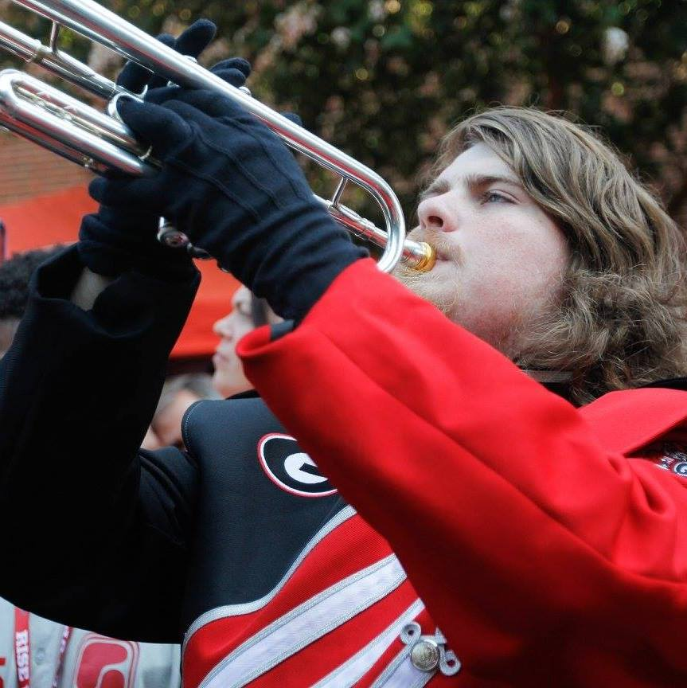

| About Me | |
|---|---|
|  | I'm a second year Computer Science major at the University of Georgia. In addition to Computer Science, I'm currently pre-business with an intent to double major in MIS. I am involved in the Redcoat Marching band, UGA's Honor College, and Phi Mu Alpha. Aside from schoolwork and participating in the afore mentioned organization, I enjoy collecting antiques and playing DOTA 2. |
| Social Media Accounts | |
|---|---|
| Instagram |
Garison Baker Instagram Profile |
| Facebook |
Garison Baker Facebook Profile |